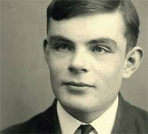
엘런 튜링
"기계도 생각을 할 수 있을까?"
현대 컴퓨터 과학의 아버지로 불리는 엘런 튜링은 1950년 "컴퓨팅 기계와 지능"이라는 논문을 발표하며 인공지능의 개념을 처음으로 제시했습니다. 그는 기계가 인간처럼 사고할 수 있는지에 대한 질문을 던지며, 튜링 테스트라는 개념을 소개했습니다. 이 테스트는 기계가 인간과 구별되지 않을 정도로 지능적인 대화를 할 수 있는지를 평가하는 방법입니다.
1950~2026
기계가 생각할 수 있을까?

"기계도 생각을 할 수 있을까?"
현대 컴퓨터 과학의 아버지로 불리는 엘런 튜링은 1950년 "컴퓨팅 기계와 지능"이라는 논문을 발표하며 인공지능의 개념을 처음으로 제시했습니다. 그는 기계가 인간처럼 사고할 수 있는지에 대한 질문을 던지며, 튜링 테스트라는 개념을 소개했습니다. 이 테스트는 기계가 인간과 구별되지 않을 정도로 지능적인 대화를 할 수 있는지를 평가하는 방법입니다.
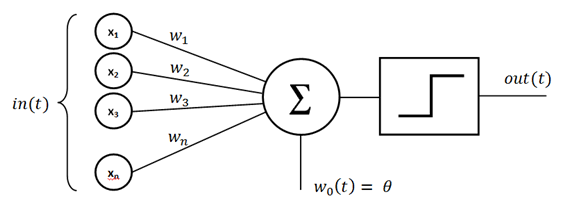
"최초의 인공 신경망 모델"
1958년, 프랭크 로젠블라트는 퍼셉트론이라는 초기 인공 신경망 모델을 개발했습니다. 퍼셉트론은 단층 신경망으로, 입력 데이터를 기반으로 간단한 패턴 인식을 수행할 수 있었습니다. 이는 인공지능 연구에 있어 중요한 발전이었으며, 이후 더 복잡한 신경망 구조의 발전에 기여했습니다.
멈춰버린 인공지능
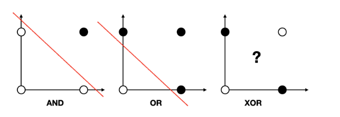
"퍼셉트론의 한계"
1970년대에는 퍼셉트론의 한계가 드러나면서 인공지능 연구에 대한 관심이 줄어들었습니다. 특히, XOR 문제와 같은 비선형 문제를 해결할 수 없다는 점이 큰 문제로 지적되었습니다. 이로 인해 인공지능 연구는 일시적으로 침체기에 들어갔으며, 이를 AI Winter라고 부르게 되었습니다.
"다시 돌아온 AI"
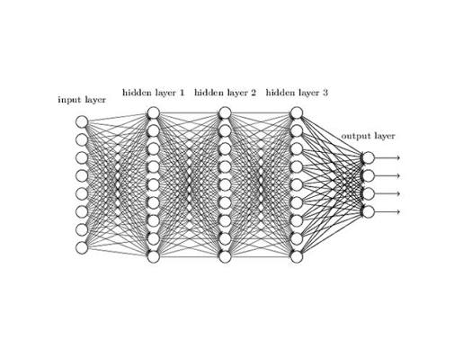
"더 복잡한 인공 신경망"
1980년대 들어서, 연구자들은 더 복잡한 신경망 구조를 개발하기 시작했습니다. 특히, 다층 퍼셉트론(MLP)은 비선형 문제를 해결할 수 있는 능력을 갖추게 되었습니다. 이는 인공지능 연구에 있어 중요한 전환점이 되었으며, 이후 딥러닝의 발전에 기여했습니다.
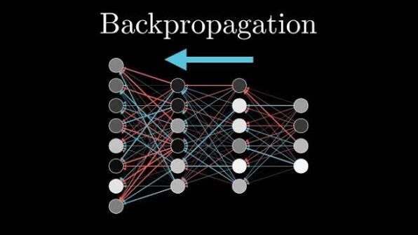
"최초의 인공 신경망 학습 알고리즘"
1980년대, 연구자들은 다층 퍼셉트론을 효과적으로 학습시키기 위한 역전파 알고리즘을 개발했습니다. 이 알고리즘은 오차를 역으로 전달하여 각 뉴런의 가중치를 조정함으로써 모델의 성능을 향상시켰습니다. 이는 인공지능 연구에 있어 중요한 발전이었으며, 이후 딥러닝의 발전에 기여했습니다.
데이터 기반 학습

"통계적 머신 러닝의 시대"
1990년대 들어서, 머신 러닝 기술은 빠르게 발전하기 시작했습니다. 특히, 결정트리, SVM, 랜덤 포레스트와 같은 알고리즘들은 다양한 문제에 효과적으로 적용될 수 있었습니다. 이는 인공지능 연구에 있어 중요한 발전이었으며, 이후 더 복잡한 머신 러닝 모델의 개발에 기여했습니다.
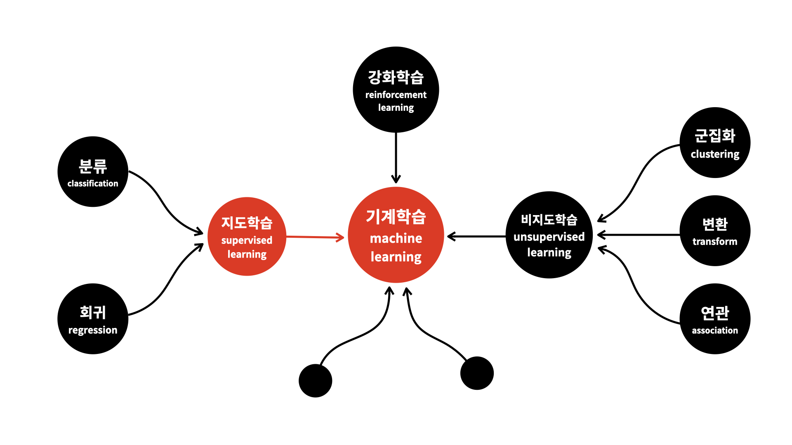
"내가 지도하는 AI"
1990년대에는 지도학습이 인공지능 연구의 중심이 되었습니다. 지도학습은 입력 데이터와 그에 대응하는 출력 데이터를 기반으로 모델을 학습시키는 방법입니다. 이를 통해 모델은 새로운 입력 데이터에 대해 정확한 출력을 예측할 수 있게 되었습니다.
더 깊이, 더 많이 학습하는 기계
"더, 더 뛰어난 성과"
2012년, 알렉스 크리제브스키는 AlexNet이라는 딥러닝 모델을 개발하며 이미지 인식 분야에서 뛰어난 성과를 거두었습니다. 이 모델은 기존의 전통적인 머신 러닝 방법보다 훨씬 더 높은 정확도를 보였으며, 딥러닝의 가능성을 입증하는 계기가 되었습니다. AlexNet은 이후 다양한 딥러닝 모델의 개발에 큰 영향을 미쳤습니다.
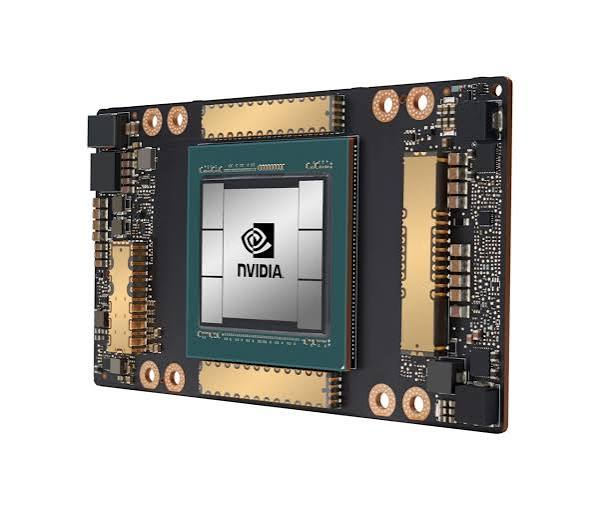
"딥러닝 학습을 가속화하는 하드웨어"
2010년대 들어서, GPU(Graphics Processing Unit)는 딥러닝 학습에 중요한 역할을 하게 되었습니다. GPU는 병렬 처리 능력 덕분에 대규모 신경망 모델의 학습을 훨씬 빠르게 수행할 수 있었습니다. 이는 딥러닝 기술의 발전에 큰 기여를 하였습니다.
인공지능의 새로운 시대
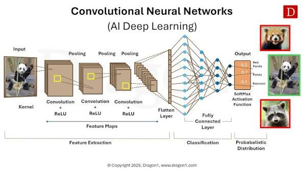
"이미지 인식의 혁신"
2015년, CNN(Convolutional Neural Network)은 이미지 인식 분야에서 뛰어난 성과를 거두며 딥러닝의 확산을 이끌었습니다. CNN은 이미지의 공간적 구조를 효과적으로 학습할 수 있어, 기존의 머신 러닝 방법보다 훨씬 더 높은 정확도를 보였습니다.
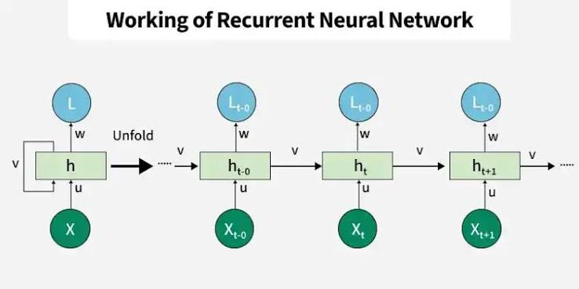
"시퀀스 데이터를 처리하는 신경망"
2015년, RNN(Recurrent Neural Network)은 시퀀스 데이터를 처리하는 데 있어 뛰어난 성과를 거두며 딥러닝의 확산을 이끌었습니다. RNN은 시간에 따른 정보를 기억하고 활용할 수 있어, 텍스트 생성, 음성 인식 등 다양한 분야에서 효과적으로 사용되고 있습니다.
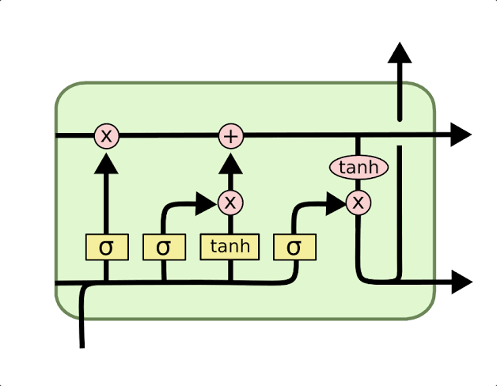
"장기 의존성을 처리하는 신경망"
2015년, LSTM(Long Short-Term Memory)은 시퀀스 데이터를 처리하는 데 있어 뛰어난 성과를 거두며 딥러닝의 확산을 이끌었습니다. LSTM은 시간에 따른 정보를 기억하고 활용할 수 있어, 텍스트 생성, 음성 인식 등 다양한 분야에서 효과적으로 사용되고 있습니다.
스스로 생각하는 기계
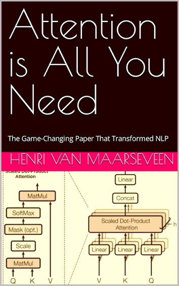
"Attention is All You Need"
2017년, Transformer 모델은 자연어 처리 분야에서 뛰어난 성과를 거두며 인공지능의 발전을 이끌었습니다. Transformer는 기존의 RNN과 LSTM과 달리, 병렬 처리가 가능하여 학습 속도를 크게 향상시켰습니다. 이 모델은 이후 다양한 딥러닝 응용 분야에서 널리 사용되고 있습니다.
스스로 만들어내는 기계
"생성형 AI"
2020년, chatGPT, Gemini, Grok 등과 같은 생성형 AI 모델들이 등장하며 인공지능의 새로운 시대를 열었습니다. 이러한 모델들은 대규모 데이터를 기반으로 자연스러운 텍스트를 생성할 수 있어, 다양한 응용 분야에서 빠르게 적용되고 있습니다.